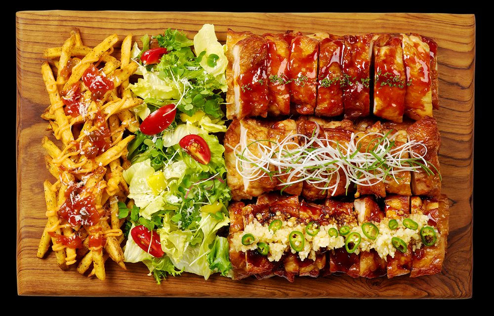
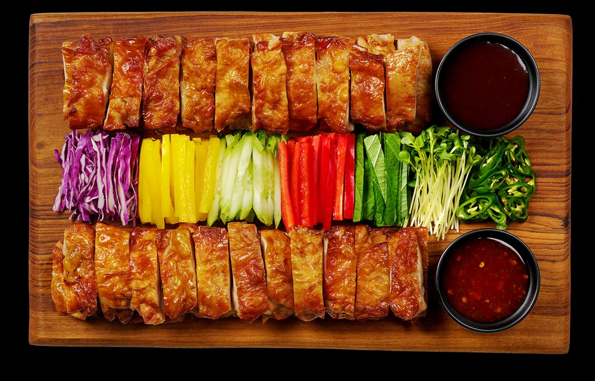
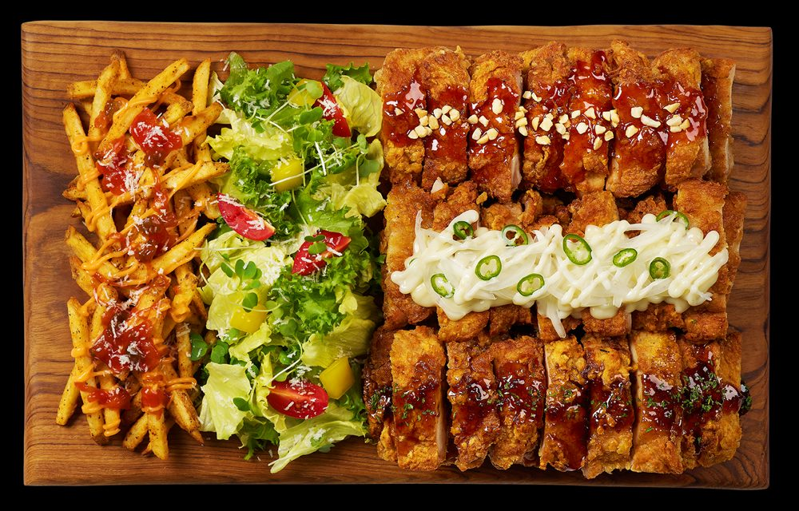

하루를 두 시간대로 나눈 메뉴One day, two menus
같은 34석, 같은 주방이지만 시간대마다 손님의 목적이 다릅니다. 메뉴판도 시간대에 맞춰 무게중심을 옮깁니다.Same 34 seats, same kitchen — but guests come for different reasons at different times of day, so the menu shifts its weight accordingly.
낮 · 커피와 음료Day · Coffee & drinks
- 커피 · 논커피 · 베이커리 · 디저트 중심Coffee, non-coffee drinks, bakery and desserts
- 식사는 셀프 라면 (직원 조리 없음)For a meal: self-service ramyeon (no staff cooking)
- 낮은 1명 운영 — 음료·디저트에만 집중One staff member by day — drinks and desserts only
저녁 · 치킨과 주류Evening · Chicken & drinks
- 한국식 오븐 로스트 치킨 — 재료는 장각 하나, 혼자면 장각 세트, 그룹은 치맥 세트·플레이트 · 샐러드는 저녁에만Korean oven-roast chicken — leg quarters only; a set for solo guests, a chimaek set or platter for groups · salad in the evening only
- 치킨과 맥주의 치맥, 맥주 · 와인과 짝을 이루는 쉐어러블 플레이트Chimaek (chicken and beer), plus shareable plates to go with beer and wine
- 음식이 주류 판매를 끌고, 주류가 체류 시간을 늘림Food drives drink sales; drinks keep guests longer
시즌별 운영 메뉴Menu by season
근무표(Tim Staff Roster)의 시즌별 인원에 맞춰 메뉴를 나눴습니다. 원칙은 두 가지입니다. 1명이 운영하는 시간에는 음료·디저트만, 조리 메뉴는 주방 담당이 있는 저녁에만. 셀프 라면은 직원이 조리하지 않아 언제든 팝니다.The menu follows the staffing in the Tim Staff Roster. Two rules: when one person is on shift, drinks and desserts only; cooked food only in the evening, when kitchen staff are on. Self-service ramyeon needs no staff, so it is available any time.
| 메뉴Menu | 성수기 6~9월Peak · Jun–Sep | 일반시즌 3~5월 · 10월Regular · Mar–May, Oct | 비수기 · 카페 전용 11~2월Off-season · café only · Nov–Feb |
|---|---|---|---|
| 낮 · 1명 운영 (음료·디저트만)Day · one staff (drinks & desserts only) | |||
| 커피 · 논커피 · 소프트드링크Coffee · non-coffee · soft drinks | 운영Open | 운영Open | 운영Open |
| 베이커리 · 디저트Bakery · desserts | 운영Open | 운영Open | 운영Open |
| 빙수 시그니처SignatureBingsu | 운영Open | 운영Open | 운영Open |
| 호떡 겨울 시그니처Winter signatureHotteok (Korean sweet pancake) | — | — | 운영Open |
| 셀프 라면Self-service ramyeon | 종일All day | 종일All day | 종일All day |
| 저녁 · 주방 담당 근무Evening · kitchen staff on | |||
| 오븐 로스트 치킨 (장각 세트 · 추가 · 치맥 세트)Oven-roast chicken (leg quarter set · extra pieces · chimaek set) | 4종4 flavours | 4종4 flavours | 대체 고려Alternative under review |
| 샐러드Salad | 운영Open | 운영Open | 대체 고려Alternative under review |
| 쉐어러블 플레이트 (웨지 감자 · 치즈 플레이트)Shareable plates (potato wedges · cheese plate) | 2종2 items | 2종2 items | 대체 고려Alternative under review |
| 맥주 · 와인 로스 없음No wasteBeer · wine | 운영Open | 운영Open | 운영Open |
오븐 로스트 치킨은 미리 양념해 둔 닭을 오븐에 굽기만 하면 되어, 일반시즌처럼 저녁 주방이 1명이어도 4종을 모두 낼 수 있습니다. 치즈 플레이트는 완제품이라 부담이 적습니다. 비수기에 손님이 늘면 인원을 조정해 저녁 메뉴를 다시 엽니다.Oven-roast chicken is pre-marinated and simply baked, so even with one evening cook (as in the regular season) all four flavours can be served. The cheese plate is ready-made, so it adds little work. If off-season demand grows, we adjust staffing and reopen the evening menu.
오븐 로스트 치킨 · 저녁의 중심Oven-roast chicken · the heart of our evenings
저녁 메뉴의 중심은 한국식 오븐 로스트 치킨입니다. 재료는 장각 하나로 정합니다. 적은 스태프로 통닭을 사 와서 매번 해체·손질하기는 어렵기 때문입니다. 장각을 기본 마리네이드로 미리 구워 두고, 주문이 들어오면 오븐에서 데우면서 손님이 고른 소스만 입힙니다. 모든 조각이 같은 부위라 굽기가 일정하고, 새 직원도 금방 배울 수 있으며, 가슴살처럼 남는 부위가 없습니다. 혼자 온 손님은 장각 세트에 장각을 추가하는 방식으로, 그룹은 치맥 세트나 플레이트로 나눠 먹습니다.The heart of the evening menu is Korean oven-roast chicken, made from one cut only: leg quarters. Buying whole birds and breaking them down every day is hard with a small team. Leg quarters are pre-roasted in the base marinade, then reheated in the oven to order and finished with the guest's choice of sauce. Every piece is the same cut, so cooking is consistent, new staff learn it quickly, and there is no leftover breast meat. Solo guests order a leg quarter set and add pieces; groups share a chimaek set or a platter.
소스 4종 — 조각마다 고를 수 있음Four sauces — choose per piece
| 소스Sauce | 추가 (GEL)Extra (GEL) | 설명Description |
|---|---|---|
| 오리지널Original | — | 기본 마리네이드 그대로 — 담백한 오븐 로스트The base marinade as is — a clean oven roast |
| 간장 마늘 시그니처SignatureSoy garlic | — | 달콤 짭짤한 간장 마늘 소스 — 외국인 선호도가 높은 맛Sweet-savoury soy garlic glaze — popular with foreign guests |
| 매콤 양념Spicy yangnyeom | — | 고추장 베이스의 매콤달콤한 한국식 양념Sweet-and-spicy Korean gochujang glaze |
| 치즈Cheese | +1 | 오븐 로스트 위에 치즈 시즈닝Oven roast finished with cheese seasoning |
판매 방식How it is sold
| 메뉴Menu | USDUSD | GELGEL | 구성What's in it | 대상For |
|---|---|---|---|---|
| 장각 세트 · 소프트드링크Leg quarter set · soft drink | $7.80 | 20 | 장각 1조각 + 공깃밥 또는 웨지 감자 + 코울슬로 + 소프트드링크1 leg quarter + rice or wedges + coleslaw + soft drink | 혼자 온 손님Solo guests |
| 장각 세트 · 맥주Leg quarter set · beer | $9.75 | 25 | 장각 1조각 + 공깃밥 또는 웨지 감자 + 코울슬로 + 맥주1 leg quarter + rice or wedges + coleslaw + beer | 혼자 온 손님Solo guests |
| 장각 추가 1조각Extra leg quarter | $2.73 | 7 | 세트에 더하거나 단품으로 — 소스 선택Add to a set or order on its own — choose a sauce | 누구나Anyone |
| 치맥 세트Chimaek set | $17.16 | 44 | 장각 4조각 + 맥주 2잔 — 소스 2가지까지 섞기 가능4 leg quarters + 2 beers — mix up to two sauces | 그룹 (2~3인)Groups (2–3) |
| 치킨 플레이트Chicken platter | $21.45 | 55 | 장각 순살 + 사이드를 나무 보드에 — 아래 플레이트 참고Boneless leg meat + sides on a wooden board — see platters below | 그룹 (2~3인)Groups (2–3) |
치킨 사이드Chicken sides
| 메뉴Menu | USDUSD | GELGEL | 설명Description |
|---|---|---|---|
| 공깃밥Steamed rice | $1.17 | 3 | 세트 탄수화물 선택 · 밥솥으로 한 번에Set carb option · cooked in one batch in a rice cooker |
| 오븐 웨지 감자Oven potato wedges | $3.12 | 8 | 세트 탄수화물 선택 · 치킨과 같은 오븐에서 함께 굽기Set carb option · baked in the same oven as the chicken |
| 코울슬로Coleslaw | $1.56 | 4 | 세트 샐러드 · 하루 한 번 만들어 2~3일 보관Set salad · made once a day, keeps 2–3 days |
| 콘치즈Corn cheese | $3.12 | 8 | 한국 치킨집 대표 사이드A classic Korean chicken-shop side |
객단가: 혼자 온 손님이 맥주 세트(25 GEL)에 장각 1조각(7 GEL)을 더하면 32 GEL로, 장각만 팔 때(1인 약 16 GEL)의 두 배 가까이 됩니다. 세트 가격은 따로 시킬 때(장각 8 + 공깃밥·웨지 3~8 + 코울슬로 4 + 음료 5~10 GEL)보다 저렴하게 잡았습니다. 운영: 주방이 조리하는 것은 장각뿐입니다. 공깃밥은 밥솥, 웨지 감자는 같은 오븐, 코울슬로는 하루 한 번 준비, 음료는 바에서 나갑니다. 가격: 초안이며, 원가 확인 후 확정합니다. 설비: 대용량 컨벡션 오븐과 밥솥이 필요합니다.Spend per guest: a solo guest who adds one leg quarter (7 GEL) to the beer set (25 GEL) spends 32 GEL — nearly twice the ~16 GEL of leg quarters alone. Sets are priced below the items bought separately (leg quarter 8 + rice or wedges 3–8 + coleslaw 4 + drink 5–10 GEL). Operations: the kitchen cooks only the leg quarters; rice comes from a rice cooker, wedges from the same oven, coleslaw is made once a day, and drinks come from the bar. Prices: draft, to be confirmed after costing. Equipment: a large convection oven and a rice cooker.
치킨 플레이트 · 2~3인 쉐어Chicken platters · to share for 2–3
치킨과 사이드를 큰 나무 보드에 한 번에 담아 내는 쉐어 플레이트입니다. 단체·그룹 손님용이고, 가격은 모두 55 GEL입니다.Chicken and sides served together on a large wooden board, for groups. All platters are 55 GEL.

오븐 치킨 3종 플레이트 대표LeadOven chicken trio platter
오븐 로스트 치킨 3가지 맛(매콤 양념 · 파채 · 마늘 간장) + 양념 감자 + 그린 샐러드Oven-roast chicken in three flavours (spicy yangnyeom · shredded scallion · garlic soy) + seasoned potatoes + green salad
우리 컨셉(오븐)에 가장 맞는 대표 플레이트The platter that best fits our oven concept

로스트 치킨 & 채소 플레이트Roast chicken & vegetable platter
오븐 로스트 치킨 + 7색 채소 스틱(적양배추 · 파프리카 · 오이 · 깻잎 · 새싹 · 고추) + 소스 2종Oven-roast chicken + seven-colour vegetable sticks (red cabbage · peppers · cucumber · perilla · sprouts · chilli) + two sauces
채소와 함께 가볍게 — 건강을 찾는 손님·여성 그룹용Lighter, with vegetables — for health-minded guests and groups

크리스피 치킨 3종 플레이트Crispy chicken trio platter
크리스피 치킨 3가지 맛(매콤 양념 · 어니언 크림 · 데리야끼) + 양념 감자 + 그린 샐러드Crispy chicken in three flavours (spicy yangnyeom · onion cream · teriyaki) + seasoned potatoes + green salad
사진은 튀김 방식 — 튀김기 없이 오븐 크리스피로 만들 수 있는지 검토 필요Photo shows fried chicken — needs testing as an oven-crisp version, since we have no fryer
사진 안내: 위 사진은 한국 오빠닭의 플레이트를 구성 참고용으로 쓴 것이며 우리 메뉴 사진이 아닙니다. 메뉴판·홍보에는 쓰지 않고, 오픈 전 우리 메뉴로 직접 촬영해 교체합니다. 가격·원가: 55 GEL(1인 18~28 GEL)은 장각 4조각(약 30 GEL)에 사이드 2개(16 GEL)를 더한 값과 비슷합니다. 장각 순살 약 700g과 사이드 재료를 합쳐 원가율 약 40~45%로 추정합니다. 판매량: 성수기 하루 3개(보수적 기준, 매출 목표 계산에서는 4개)로 아래 매출 계산에 넣었습니다. 그룹 손님 일부가 치맥 세트 대신 플레이트를 고른다고 보고 치킨 주문은 10건에서 8건으로 줄였습니다. 호스텔 그룹 디너·주말 예약·SNS 홍보로 하루 5개를 영업 목표로 잡습니다. 일반시즌은 약 2개, 비수기(카페 전용)는 0개입니다.About the photos: these are reference images of platters from Korea's Oppadak chain, used only to show the format — they are not our dishes. They will not be used on our menu or in promotion, and will be replaced with our own photos before opening. Price and cost: 55 GEL (18–28 GEL per person) is close to four leg quarters (~30 GEL) plus two sides (16 GEL). With about 700 g of boneless leg meat plus sides, food cost is estimated at 40–45%. Volume: 3 a day in peak season (conservative; 4 in the sales-target case), included in the daily sales below. Some groups are assumed to choose a platter instead of a chimaek set, so chicken orders drop from 10 to 8. The sales target is 5 a day through hostel group dinners, weekend bookings and social media. About 2 a day in the regular season, none off-season (café only).
카페 메뉴 (초기 구상)Café menu (opening draft)
조지아 카페에서 일반적으로 파는 메뉴를 기본으로, 낮 1인 운영 원칙에 맞춰 바로 내는 음료·빙수·베이커리로 구성했습니다. 가격은 트빌리시 시세(로스터리 카페 기준 밀크 커피 8~10 GEL, 아메리카노는 그보다 저렴, 베이커리 3~8 GEL)에 맞췄습니다. 원가 확인 후 확정합니다.Built on what Georgian cafés usually sell, limited to drinks, bingsu and bakery that one person can serve quickly. Prices follow the Tbilisi market (milk coffees 8–10 GEL at roastery cafés, Americano cheaper, bakery items 3–8 GEL), to be confirmed after costing.
가격 표시: 손님에게 받는 VAT 포함 금액. GEL이 메뉴판 가격이고, USD는 1 GEL = $0.39로 환산한 값입니다.Prices are what the guest pays, VAT included. GEL is the menu price; USD is converted at 1 GEL = $0.39.
커피 · 평균 약 8 GEL ($3.08)Coffee · avg. ~8 GEL ($3.08)
| 메뉴Menu | USDUSD | GELGEL | 비고Note |
|---|---|---|---|
| 에스프레소Espresso | $1.95 | 5 | |
| 아메리카노 (Hot / Iced)Americano (hot / iced) | $2.34 | 6 | 인근 Chaduna 6Chaduna nearby: 6 |
| 마키아토Macchiato | $2.34 | 6 | |
| 카푸치노Cappuccino | $3.12 | 8 | |
| 카페라떼Caffè latte | $3.12 | 8 | |
| 플랫화이트Flat white | $3.51 | 9 | |
| 아이스라떼Iced latte | $3.51 | 9 | 인근 Cafe Sololaki 10Cafe Sololaki nearby: 10 |
| 모카Mocha | $3.90 | 10 | |
| 라프 커피Raf coffee | $3.90 | 10 | 크림·바닐라 — 조지아 카페 인기 메뉴Cream & vanilla — a Georgian café favourite |
논커피 · 평균 약 10 GEL ($3.73)Non-coffee · avg. ~10 GEL ($3.73)
| 메뉴Menu | USDUSD | GELGEL | 비고Note |
|---|---|---|---|
| 홍차 · 허브티Black tea · herbal tea | $1.95 | 5 | 타임 등 조지아 허브Georgian herbs such as thyme |
| 핫초코Hot chocolate | $3.12 | 8 | |
| 레몬에이드Lemonade | $3.12 | 8 | |
| 타르후나 레몬에이드Tarkhuna lemonade | $3.12 | 8 | 타라곤 — 조지아식Tarragon, Georgian style |
| 생오렌지 주스Fresh orange juice | $4.68 | 12 | |
| 밀크셰이크Milkshake | $4.68 | 12 | |
| 제철 과일 스무디Seasonal fruit smoothie | $5.46 | 14 | 빙수와 같은 제철 과일Same seasonal fruit as the bingsu |
빙수 · 2인 쉐어 기준Bingsu · sized for two
| 메뉴Menu | USDUSD | GELGEL | 구성What's in it |
|---|---|---|---|
| 우유 눈꽃빙수Milk snowflake bingsu | $8.58 | 22 | 기본 · 연유 · 떡 · 견과Classic · condensed milk · rice cake · nuts |
| 제철 과일 빙수 시그니처SignatureSeasonal fruit bingsu | $10.92 | 28 | 시즌별 과일 로테이션 (아래 표)Fruit changes by season (see below) |
| 사페라비 와인 빙수 시그니처SignatureSaperavi wine bingsu | $12.48 | 32 | 조지아 사페라비 와인 졸임 시럽 + 베리 · 와인 셔벗 토핑Reduced Georgian Saperavi wine syrup + berries · wine sorbet topping |
빙수는 비교할 트빌리시 시세 자료가 없어, 1인당 11~16 GEL(디저트 수준)로 잡은 기존 가격을 유지했습니다. 와인 빙수는 와인을 졸여 시럽으로 쓰는 방식입니다(알코올 대부분 날아감). 주류 판매 허가와 미성년자 판매 기준은 확인이 필요합니다.With no Tbilisi market data for bingsu, prices stay at 11–16 GEL per person (dessert level). The wine bingsu uses wine reduced to a syrup (most of the alcohol cooks off); alcohol licensing and rules on sales to minors still need checking.
제철 과일 빙수 로테이션 — 조지아 제철 과일Seasonal fruit rotation — Georgian produce
| 봄 (3~5월)Spring · Mar–May | 여름 (6~9월)Summer · Jun–Sep | 가을 (10월)Autumn · Oct | 겨울 (11~2월)Winter · Nov–Feb |
|---|---|---|---|
| 딸기Strawberry | 복숭아 · 수박 · 체리Peach · watermelon · cherry | 포도 · 무화과Grape · fig | 귤 · 감 · 석류Mandarin · persimmon · pomegranate |
베이커리 · 디저트 — 폐기가 적은 품목만 (생크림·치즈 케이크 제외)Bakery & desserts — low-waste items only (no cream or cheese cakes)
| 메뉴Menu | USDUSD | GELGEL | 조달Sourcing |
|---|---|---|---|
| 크루아상Croissant | $2.34 | 6 | Buy |
| 쿠키Cookie | $1.56 | 4 | Buy |
| 브라우니Brownie | $2.73 | 7 | Buy |
| 호떡 (2개) 겨울 시그니처Winter signatureHotteok (2 pcs) | $3.12 | 8 | 11~2월 · 반죽 준비 후 철판Nov–Feb · dough prepped, cooked on the griddle |
빙수는 Menu 시트에 매출로 들어가 있지 않습니다(추가 매출 처리). 카페 메뉴를 시트에 반영하려면 빙수 판매량을 따로 잡아야 합니다.Bingsu is not yet in the Menu sheet's sales (treated as upside). To add the café menu to the sheet, bingsu sales volume needs its own estimate.
카테고리별 메뉴Menu by category
가격은 트빌리시 시세에 맞춘 값으로, 손님이 내는 VAT 포함 금액을 USD와 GEL로 따로 적었습니다. "시트 가격"은 Menu 시트의 원래 GEL 가격입니다. 판매량은 두 가지입니다. 기본은 Menu 시트 손님 수(하루 48명) 기준이고, 목표는 재무 목표 하루 $550을 맞추기 위한 판매량(하루 60명)입니다. 하루 매출은 재무계획과 같이 VAT를 뺀 USD이고, 매출 비중 막대는 목표 기준입니다.Prices follow the Tbilisi market and are what the guest pays incl. VAT, shown separately in USD and GEL; "Sheet price" is the original GEL price in the Menu sheet. Volumes are shown two ways: Base uses the Menu sheet's 48 guests a day, and Target is the volume needed for the finance target of $550 a day (60 guests). Daily sales are in USD excluding VAT, and share bars use the target.
| 카테고리 · 세부 메뉴Category · items | 시간대When | USD (VAT 포함)USD (incl. VAT) | GEL (VAT 포함)GEL (incl. VAT) | 시트 가격 (GEL)Sheet price (GEL) | 판매 기본Sold base | 판매 목표Sold target | 매출 기본 (USD)Sales base (USD) | 매출 목표 (USD)Sales target (USD) | 비중 (목표)Share (target) |
|---|---|---|---|---|---|---|---|---|---|
| 식사Food | |||||||||
| 오븐 로스트 치킨Oven-roast chickenMake 장각 하나로 만드는 오븐 로스트 치킨, 소스 4종 — 장각 세트 20~25 · 장각 추가 7 · 치맥 세트 44 GEL. 주문당 평균 약 30 GEL(세트에 든 음료 포함). 기본 판매량은 플레이트로 옮겨 가는 그룹 주문 2건을 뺀 하루 8주문.Oven-roast chicken from leg quarters only, four sauces — leg quarter set 20–25 · extra piece 7 · chimaek set 44 GEL. ≈ 30 GEL per order on average (drinks in sets included). Base volume is 8 orders a day, after two group orders move to platters. | 저녁Evening | $2.73–17.16 | 7–44 | 55 / 접시/ plate | 8 | 9 | $79.32 | $89.24 | 16.2% |
| 치킨 플레이트 (2~3인)Chicken platter (for 2–3)Make 치킨 + 사이드를 나무 보드에 담은 쉐어 플레이트 3종 — 기본 하루 3개(보수적), 목표 4개.Three sharing platters of chicken and sides on a wooden board — base 3 a day (conservative), target 4. | 저녁Evening | $21.45 | 55 | — | 3 | 4 | $54.53 | $72.71 | 13.2% |
| 셀프 라면Self-service ramyeonSelf 손님이 라면 조리기로 직접 끓여 먹는 무인 셀프 방식 — 직원 조리 없이 전 시즌 종일 운영 · 손님을 부르는 미끼 메뉴. 다른 한식당 시세(12 GEL)에 맞춤.Guests cook instant ramyeon themselves on a ramyeon cooker — no staff cooking, all day in every season · a draw item, priced to match other Korean restaurants (12 GEL). | 종일All day | $4.68 | 12 | 28 | 4 | 5 | $15.86 | $19.83 | 3.6% |
| 샐러드SaladPrep 제철 채소 메인 샐러드 1종 + 하우스 드레싱 — 주방 담당이 있는 저녁에만One main salad of seasonal vegetables + house dressing — evenings only | 저녁Evening | $7.02 | 18 | 22 | 3 | 3 | $17.85 | $17.85 | 3.2% |
| 사이드Side | |||||||||
| 콘치즈Corn cheesePrep 한국 치킨집 대표 사이드 (시트의 공깃밥 자리)A classic Korean chicken-shop side (in place of steamed rice in the sheet) | 저녁Evening | $3.12 | 8 | 5 | 5 | 6 | $13.22 | $15.86 | 2.9% |
| 쉐어러블 플레이트Shareable plates | |||||||||
| 오븐 웨지 감자Oven potato wedgesPrep 치킨과 같은 오븐에서 함께 굽는 웨지 + 소스Wedges baked in the same oven as the chicken + sauce | 저녁Evening | $3.12 | 8 | 20 | 4 | 6 | $10.58 | $15.86 | 2.9% |
| 치즈 · 올리브 · 호두 플레이트Cheese, olive & walnut plateBuy 치즈 · 올리브 · 호두 쉐어 플레이트 — 와인과 짝Cheese, olives and walnuts to share — pairs with wine | 저녁Evening | $7.02 | 18 | 20 | 2 | 3 | $11.90 | $17.85 | 3.2% |
| 베이커리 · 디저트Bakery & desserts | |||||||||
| 베이커리BakeryBuy평균가avg. price 쿠키 · 크루아상 · 브라우니 등Cookies, croissants, brownies, etc. | 낮Day | $2.34 | 6 | 12 | 4 | 6 | $7.93 | $11.90 | 2.2% |
| 디저트DessertAssemble 빙수 · 호떡 등 디저트Desserts such as bingsu and hotteok | 낮Day | $5.85 | 15 | 15 | 4 | 8 | $19.83 | $39.66 | 7.2% |
| 커피 · 논커피Coffee & non-coffee | |||||||||
| 커피CoffeeMake평균가avg. price 아메리카노 · 라떼 · 카푸치노 · 플랫화이트 · 라프 등Americano, latte, cappuccino, flat white, Raf, etc. | 낮Day | $3.12 | 8 | 10 | 18 | 25 | $47.59 | $66.10 | 12.0% |
| 논커피 음료Non-coffee drinksMake평균가avg. price 차 · 핫초코 · 레몬에이드 · 주스 · 스무디Tea, hot chocolate, lemonades, juice, smoothies | 낮Day | $3.90 | 10 | 15 | 6 | 9 | $19.83 | $29.75 | 5.4% |
| 주류Alcohol | |||||||||
| 글라스 와인Wine by the glassBuy 조지아 와인 글라스 (사페라비급)Georgian wine by the glass (Saperavi level) | 저녁Evening | $4.68 | 12 | 18 | 5 | 8 | $19.83 | $31.73 | 5.7% |
| 보틀 와인Wine by the bottleBuy평균가avg. price 조지아 와인 보틀Georgian wines by the bottle | 저녁Evening | $17.55 | 45 | 60 | 1 | 2 | $14.87 | $29.75 | 5.4% |
| 맥주BeerBuy 병·캔 맥주 (생맥주는 운영이 가능하면)Bottled and canned beer (draught if feasible) | 저녁Evening | $3.51 | 9 | 15 | 14 | 26 | $41.64 | $77.34 | 14.0% |
| 기타 음료Other drinks | |||||||||
| 탄산음료 · 생수Soft drinks & waterBuy 탄산음료 · 생수Soft drinks and bottled water | 종일All day | $1.95 | 5 | 9 | 8 | 10 | $13.22 | $16.53 | 3.0% |
| 합계Total | — | — | — | 89 | 130 | $388.00 | $551.96 | 100% | |
매출 비중 막대는 가장 큰 오븐 로스트 치킨(16.2%)을 기준 길이로 그렸습니다.Share bars are scaled to the largest item, oven-roast chicken (16.2%).
매출 목표 하루 $550 — 가능성Daily sales target of $550 — is it achievable?
재무 담당의 목표는 성수기 하루 약 $550(VAT 제외)입니다. 시세 가격과 Menu 시트 손님 수(48명)로는 하루 $388이라, 가격을 다시 올리지 않고 목표를 맞추려면 손님 수와 1인당 주문이 함께 늘어야 합니다. 목표 판매량으로 계산하면 하루 $552입니다.Finance is targeting about $550 a day (ex-VAT) in peak season. At market prices and the Menu sheet's 48 guests, sales are $388 a day, so reaching the target without raising prices again needs more guests and more spent per guest. The target volumes below give $552 a day.
| 항목Measure | 기본Base | 목표Target | 판단Assessment |
|---|---|---|---|
| 하루 매출 (USD, VAT 제외)Daily sales (USD ex-VAT) | $388 | $552 | 약 42% 증가 필요Needs about +42% |
| 낮 손님 (12:00–19:00)Day guests (12:00–19:00) | 20 | 26 | 34석 기준 좌석 이용률 약 11% — 여유 충분About 11% seat use on 34 seats — plenty of room |
| 저녁 손님 (19:00–23:00)Evening guests (19:00–23:00) | 28 | 34 | 34석 × 2회전의 50% — 가능하지만 영업이 필요50% of 34 seats × 2 turns — possible, but needs active selling |
| 저녁 1인 결제 (GEL, VAT 포함)Evening spend per guest (GEL incl. VAT) | ~29 | ~34 | 치킨 나눠 먹기 + 맥주·와인 1.2잔 + 사이드 — 치맥 세트로 유도Shared chicken + 1.2 beers or wines + a side — driven by the chimaek set |
| 낮 1인 결제 (GEL, VAT 포함)Day spend per guest (GEL incl. VAT) | ~18 | ~20 | 커피 + 디저트(빙수) 함께 주문 — 빙수 판매 4 → 8개Coffee with dessert (bingsu) — bingsu sales 4 → 8 |
결론: 가능하지만 조건부Verdict: achievable, with conditions
가격을 내리고도 $550을 맞추려면 하루 손님을 48명에서 60명으로 늘려야 합니다(+25%). 좌석은 충분하지만, 손님은 저절로 늘지 않습니다.Hitting $550 at market prices needs 60 guests a day instead of 48 (+25%). There are enough seats, but the guests won't come on their own.
손님을 늘리는 방법How to bring more guests
호스텔 투숙객 웰컴 드링크 쿠폰 · 투어 후 그룹 디너(플레이트 + 맥주) · 주말 그룹 예약 · 잼 나이트 같은 정기 행사 · 플레이트·빙수 사진으로 SNS 홍보Welcome-drink coupons for hostel guests · post-tour group dinners (platter + beer) · weekend group bookings · regular events such as jam nights · social media built on platter and bingsu photos
1인 주문을 늘리는 방법How to raise spend per guest
치맥 세트를 기본 추천 · 플레이트를 그룹에 먼저 제안 · 낮에는 커피와 빙수 함께 주문 유도Lead with the chimaek set · offer platters to groups first · pair coffee with bingsu by day
재무계획에 쓰는 법How to use this in the financial plan
기본($388)을 보수적 계획으로, 목표($552)를 영업 목표로 나눠 두는 것을 권합니다. 목표 숫자로만 계획을 세우면 손님이 덜 올 때 적자가 커집니다.We suggest keeping the base ($388) as the conservative plan and the target ($552) as the sales goal. Planning on the target alone makes losses larger if guest numbers fall short.
매출은 어디서 나오나 (목표 기준)Where sales come from (target)
음식이 하루 매출의 54%, 음료가 46%입니다. 매출 상위 3개(오븐 로스트 치킨 · 플레이트 · 맥주)가 전체의 43%를 차지합니다.Food is 54% of daily sales and drinks 46%. The top three items (oven-roast chicken, platters, beer) make up 43%.
목표 기준 성수기 하루 매출은 $552(VAT 제외), VAT 포함 하루 약 1,670 GEL, 손님 1인당 약 28 GEL입니다. 시트는 성수기 기준이며, Revenue 시트가 일반시즌 60%, 비수기 25%를 적용합니다.At target, peak-season daily sales are $552 (ex-VAT) — about 1,670 GEL a day incl. VAT, or 28 GEL per guest. Figures are for the peak season; the Revenue sheet applies 60% for the regular season and 25% for the off-season.
주방이 감당할 수 있는 구조A menu the kitchen can handle
메뉴 수를 15개로 묶은 이유는 재료와 사람을 늘리지 않기 위해서입니다. 이번 근무표와 맞춰 보면 다음과 같습니다.The menu is held to 15 categories so we don't add ingredients or staff. Checked against the current roster:
오븐 하나로 여러 메뉴One oven, several dishes
치킨, 웨지 감자, 콘치즈를 같은 오븐에서 함께 굽습니다. 튀김기가 없어 설비와 기름 관리 부담이 줄어듭니다.Chicken, potato wedges and corn cheese all go in the same oven. With no fryer, there is less equipment and no oil to manage.
재료는 장각 하나로One cut: leg quarters
장각 한 가지 재료에 소스만 바꿔 4가지 맛을 냅니다. 손질이 필요 없고 재고가 한 갈래라, 적은 인원으로도 저녁 주방 1명이 맡을 수 있습니다.One cut — leg quarters — becomes four flavours by changing the sauce. No butchery and a single stock line mean one evening cook can run it with a small team.
1명 운영은 음료·디저트만One person on shift: drinks & desserts only
낮과 비수기 일요일처럼 1명이 운영하는 시간에는 음료·디저트만 냅니다. 식사는 무인 셀프 라면으로 대신해 재료 손실과 운영 부담을 없앱니다.During the day, and on off-season Sundays, one person serves drinks and desserts only. Self-service ramyeon covers meals, avoiding waste and extra work.
음료는 두 사람이 나눠서Drinks split between two roles
낮 커피·논커피는 바리스타, 저녁 맥주·와인은 바 책임자가 맡습니다. 주류 4개 품목 중 3개가 완제품(Buy)이라 서비스가 빠릅니다.The barista handles daytime coffee and drinks; the bar manager handles evening beer and wine. Three of the four alcohol items are bought in, so service is quick.
메뉴 원칙으로 본 점검Checked against our menu principles
블루프린트의 메뉴 개발 11원칙 중 이 메뉴판과 직접 맞닿는 항목만 골랐습니다.The principles from the blueprint's 11 menu-development rules that apply directly to this menu.
시그니처Signatures
찾아올 이유를 만드는 메뉴입니다. 낮은 디저트 시그니처(빙수·호떡), 저녁은 오븐 로스트 치킨 시그니처(간장 마늘)입니다.The dishes that give people a reason to come: dessert signatures by day (bingsu, hotteok) and the oven-roast chicken signature (soy garlic) by night.
간장 마늘 오븐 치킨 · 저녁 (성수기·일반시즌)Soy-garlic oven chicken · evening (peak & regular season)
저녁 대표 시그니처. 튀기지 않고 오븐에 구운 한국식 치킨에 간장 마늘 소스를 입혀, 맥주와 함께 나눠 먹는 치맥 메뉴입니다.Our evening signature: Korean chicken baked, not fried, glazed in soy garlic — made for sharing over beer (chimaek).
눈꽃빙수 · 연중Snowflake bingsu · all year
ENVOY의 대표 시그니처. 여름 한정이 아니라 모든 시즌에 팝니다.ENVOY's main signature — sold in every season, not just summer.
호떡 · 겨울 (11~2월)Hotteok · winter (Nov–Feb)
겨울 시그니처. 반죽을 미리 준비하고 철판에 굽기만 하면 되어 1명 운영이 가능하고, 외국인 손님도 이미 좋아하는 메뉴입니다.Our winter signature. The dough is prepped ahead and simply griddled, so one person can run it — and foreign guests already love it.